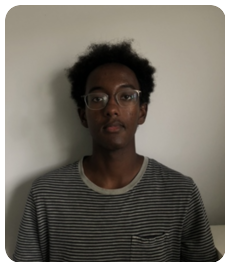

|  | Yasin ElmiComputer Science Undergraduate Student
I am a second year university student in computer science. I have experience in customer service as a lifeguard for 3 years. I am Fully bilingual in English and French and I possess great communication skills, hardworking and adaptive to any environment. Proficient in Python, Java, Microsoft Word, Excel, Power Point and Paint |
| Python | ⭐⭐⭐⭐ | HTML | ⭐⭐ |
| CSS | ⭐ | Java | ⭐⭐⭐⭐ |
| JavaScript | ⭐ | C++ | ⭐⭐⭐ |
| FireBase API | ⭐⭐⭐⭐ | SQLite | ⭐⭐⭐ |
| 08/2019 - Present | Lifeguard |
| H2O, Ottawa, Ontario | |
|
|
| 07/2018 - 09/2018 | Administrative assistant |
| Foundation Acacia,Ontario,Ottawa | |
|
|
| 09/2021 - Present | Meat Customer Service Representative |
| FarmBoy,Ontario,Ottawa | |
|
Junior VP Philanthropist
Computer Science Student Association
October 2021 - Present
Social Marketing Coordinator
Project F.L.Y
October 2021 - Present
| Abaneh Egeh | Matt Higeli | |
| Executive Director | Meat Deparment Manager | |
| Fondation Acacia | FarmBoy | |
| (613) 769-7755 | 647-830-6414 | |
| moe@hibiscusrealty.com | matt-higeli@hotmail.com |